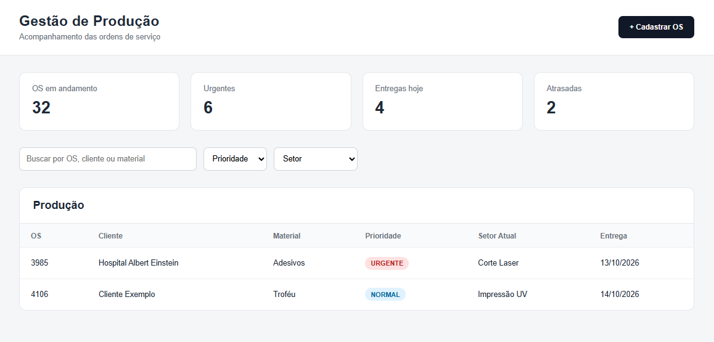
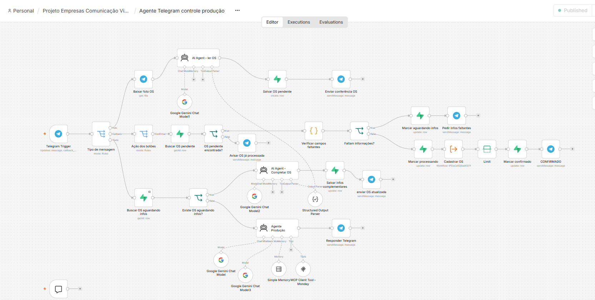
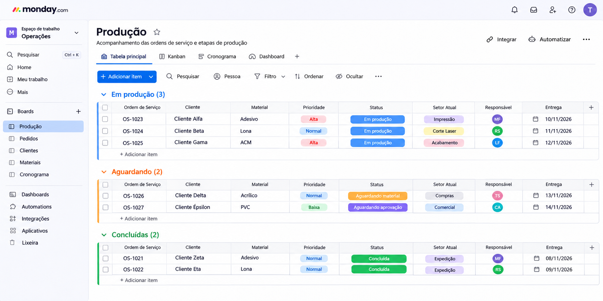
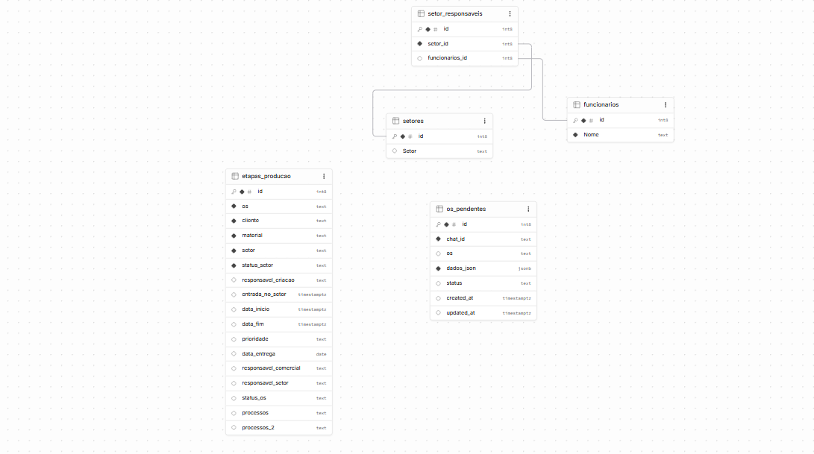
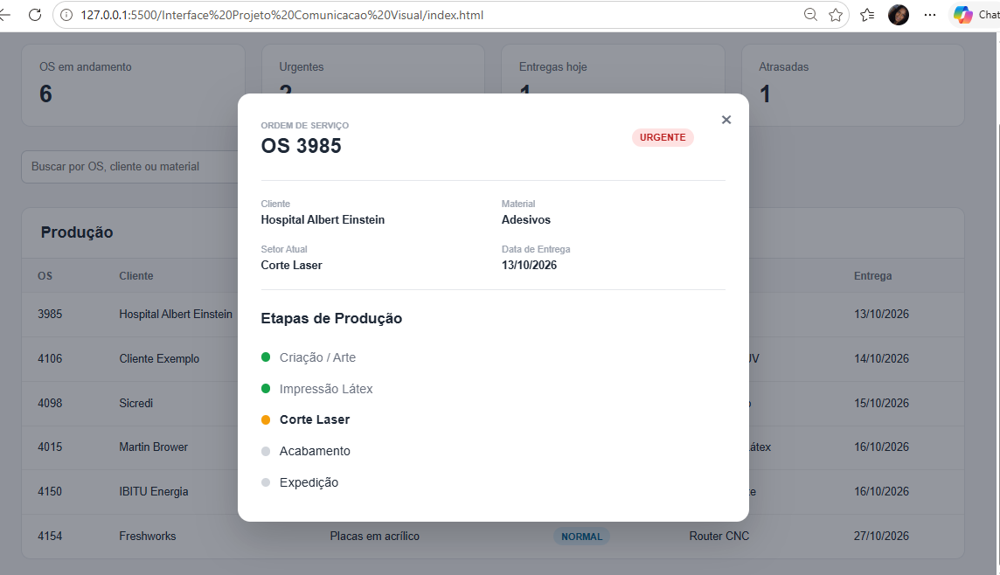

GESTÃO DE
PRODUÇÃO.
Estruturação de um fluxo de automação para organizar ordens de serviço, distribuir etapas entre setores e centralizar o acompanhamento da produção.

O PROBLEMA.
O acompanhamento da produção envolve diferentes ordens de serviço, responsáveis, setores, prioridades e datas.
Quando essas informações ficam distribuídas entre diferentes etapas e ferramentas, acompanhar o andamento de cada trabalho se torna mais complexo e exige muitas atualizações manuais.
A proposta do projeto foi transformar esse fluxo em um processo mais centralizado, automatizando registros e facilitando a visualização da produção.
SISTEMAS
CONECTADOS.
O fluxo conecta diferentes ferramentas para que cada informação registrada consiga avançar automaticamente pelas etapas da produção.
COMO FUNCIONA.
A ordem de serviço percorre uma sequência estruturada até chegar ao acompanhamento final da produção.
As informações da ordem entram no fluxo.
O conteúdo é interpretado e organizado.
Os setores necessários são registrados.
Status e informações são sincronizados.
A produção pode ser consultada pela interface.
FERRAMENTAS
DO PROJETO.
Cada ferramenta assume uma função dentro do fluxo, desde a entrada das informações até a interface de acompanhamento.
WORKFLOW N8N.
O n8n funciona como o centro do fluxo, recebendo informações, tratando os dados e conectando as diferentes ferramentas.

INFORMAÇÃO ORGANIZADA.
O fluxo registra e atualiza informações para que as etapas possam ser consultadas e acompanhadas ao longo da produção.


DASHBOARD
PCP.
A interface foi pensada para transformar os dados da produção em uma visão mais simples e rápida de consultar.
Ordens de serviço, prioridades, setores e status podem ser visualizados em um único ambiente.

MENOS
PROCESSO MANUAL.
O projeto conecta etapas que antes dependiam de acompanhamento manual, centralizando informações e facilitando a visualização do fluxo de produção.